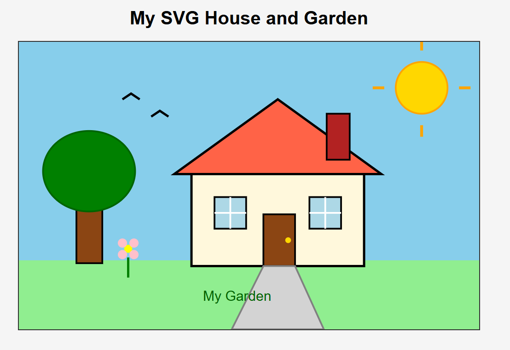
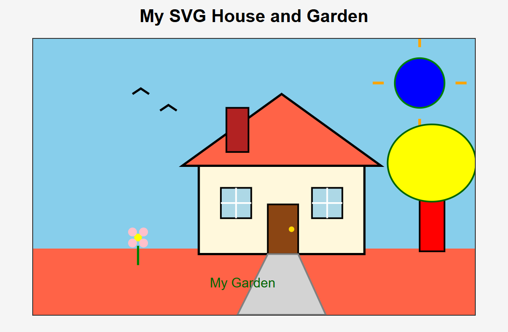

Exercise 4.1 · Draw SVGs
Changing an SVG House and Garden
I started with an existing SVG illustration and changed its colours and positions. Compare the original with my edited version below.
Before and after


What I changed
- Changed the grass, sun, and tree colours.
- Moved the tree from the left side of the picture to the right.
- Moved the chimney from the right side of the roof to the left.
- Kept the two windows in a shared group and positioned them with
translate.
The SVG uses a coordinate area of 800 by 500. The origin is at the top-left;
x-coordinates increase to the right and y-coordinates increase downward.
The fill and stroke values control colour, while
coordinates control position.